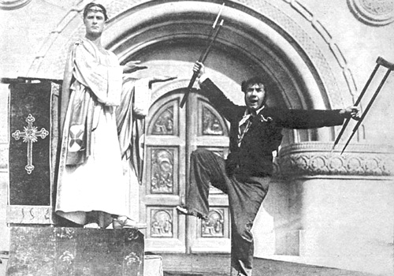

Back
Back to Yury Neretin homepage
Логическая аргументация данной статьи заимствована у многочисленных пользователей РуНета, способных сохранять скептицизм перед нобелевским блеском.
К вопросу о степени достоверности документалистики Светланы Алексиевич
Юрий Неретин, ИТЭФ, 14.12.2015
1. Присказка
2. Цитаты из недавних интервью Алексиевич
3. Странствия одной белуги.
4. Одна из многих жертв советского режима
5. Московская одиссея
6. Приключения бандеровской козы
7. О жертвах боев
8.Несколько слов о документалистике
1. Присказка
Нобелевская лекция недавней лауреатки вызвала страсти и споры.
Привожу отрывок.
Что я слышала, когда ездила по России ...
– Модернизация у нас возможна путем шарашек и расстрелов.
– Русский человек вроде бы и не хочет быть богатым, даже боится. Что же он хочет? А он всегда хочет одного: чтобы кто-то другой не стал богатым. Богаче, чем он.
– Честного человека у нас не найдешь, а святые есть.
– Не поротых поколений нам не дождаться; русский человек не понимает свободу, ему нужен казак и плеть.
– Два главных русских слова: война и тюрьма. Своровал, погулял, сел ... вышел и опять сел ...
– Русская жизнь должна быть злая, ничтожная, тогда душа поднимается, она осознает, что не принадлежит этому миру ... Чем грязнее и кровавее, тем больше для нее простора ...
– Для новой революции нет ни сил, ни какого-то сумасшествия. Куража нет. Русскому человеку нужна такая идея, чтобы мороз по коже ...
– Так наша жизнь и болтается – между бардаком и бараком. Коммунизм не умер, труп жив.
В Российском обществе нет единства в отношении этих речей. Для прогрессивного интеллигента подобные слова - бальзам на душу. С другой стороны, встречаются люди, которым это не очень нравится и даже не нравится вообще.
Можно было
бы пообсуждать, почерпнула ли Алексиевич эти сентенции из писем или произносит сама. Ответ, по-видимому, ясен всем спорящим сторонам. Произносит она сама, в виде голосов из России в соответствии с правилами европейской толерантности. Потому как скажи в таком стиле и от своего имени о племени Тумбо-Юмбо, можно и под суд попасть. Но опять мы упираемся в вопрос, нравится человеку такой стиль изложения мыслей, или нет.
Дабы избежать дискуссий на тему, что такое хорошо, а что такое плохо, приведу несколько цитат из разных интервью Алексиевич. Нам сказано много правды, давайте эту правду выслушаем. Цитаты из Алексиевич выделены курсивом. Все они относятся к последним 30 годам, часть к сегодняшнему дню. Датировки очевидны, при желании оригиналы по работающим ссылкам. Каждый может проверить эти сентенции на предмет соответствия реальности.
2. Цитаты из недавних интервью Алексиевич
Лекция в Кракове, 24.10.2015,
Но жизнь, вообще–то, единственная, во вторых, чудесная вещь – авантюра такая интересная...
«Русский человек никогда не был свободным», 02-12-2013
В 90-е годы все выросли с тем, что утром идешь на работу и обязательно увидишь — лежит убитый....
Чтобы что-то поменять... Этот момент был, наверное, в 90-е годы, когда казалось, что очистился воздух. Даже пластика людей поменялась — многие люди в книге вспоминают, что у людей были другие лица....
Лекция в Кракове, 24.10.2015,
– Вот я недавно была в Москве. Я села в такси. И таксист у меня спрашивает: «А вы православная?» Я говорю: «Да, бабушка меня тайком крестила». «Ну тогда сиди, а то я думал тебя выкинуть из машины». Я спрашиваю: «А че это вы так?» А он: «У меня православное такси». И сидит такой мощный мужик. А потом мы начали с ним разговаривать. И вдруг он разворачивается ко мне, и вот этот напор московский, русский, который на тебя направлен, он как бы разбивается о мое спокойствие, и тут он говорит: «А ты знаешь, меня баба моя бросила». И слезы в глазах. И продолжает: «Я ее любил. Я ее бил, но я ее любил». Я говорю: «Тоже способ любви хороший, конечно». Вот. Но мы начали говорить с ним. И это был очень интересный рассказ....
Интервью газете La vanguardia 29/11/2015
Следующий абзацы - единый кусок текста
«Совсем недавно я была в Москве и решила сходить в храм на службу. Вижу возле собора большое количество полицейских, бойцов подразделений по борьбе с беспорядками, много народу. Думаю, что-то случилось: нападение или еще что-то такое. Но мне говорят: «Нет, сеньора, мы собрались помолиться во славу русского ядерного оружия». Представляете? Помолиться за русское ядерное оружие! Полиция, политики и военные! Это отвратительно!
На другой день сажусь в такси, водитель меня спрашивает, православная ли я. «Нет», - отвечаю. «Тогда извините, вам придется освободить машину, поскольку это православное такси, и мы обслуживаем исключительно православных».
Вечером пошла в театр – и вижу группу казаков с нагайками, требующих отменить спектакль по Набокову. И это я говорю всего о нескольких днях в Москве. Вы понимаете – красный человек жив! Мы должны от него избавиться!»
Этот текст получен двойным переводом, интервью было на испанском, перевод взят из интернет-газеты Взгляд.
Взгляд
Лекция в Кракове, 24.10.2015,
Я хочу сказать, что представляю ужас русских людей, когда вот стоит съемочная группа у двери. Это страх. Это страх почти генетический....
Боль – это какое–то вечное русское состояние. Вот любого человека тронь в поезде или на улице, или в кафе и на вас столько выползет всего... И о семье, и о родителях, и о нем самом, потому что кто–то не получил отпуск, кто–то был на войне, кто–то не может пережить распад этой империи, этот капитализм ему как–то не подходит....
Но когда начинаешь говорить о Путине, он или боится, или повторяет все то, что говорит телевидение. Это как-то не соприкасается. Его духовный мир (храмы, монастыри) с тем, что он слышит из телевидения. И он очень легко в него входит....
Что касается Варенникова. Вот ребята там ели гнилую капусту. Приедешь на заставу, а ребята жалуются, что в капусте черви. Их хоронили убитых в старых гимнастерках еще военного времени. И консервы они показывали, которым по 20 лет, с каких–то складов. А Варенникову, поскольку у него то ли язва, то ли еще что–то, ему привезли специально русскую корову, он питался хорошо, ему доили это молоко и любовница была – все как положено русскому генералу....
Мы ездили по России. Начинаешь говорить о свободе. Мужики говорят: «Какая свобода? Вон щас откроют магазин, водка какая хочешь, колбасы навалом и даже бананы есть! А ты о какой–то свободе»....
Вот только надо прочитать «Архипелаг ГУЛАГ» – и уже будет свободный человек. А люди бежали мимо этих книжных развалов...
Когда компартию Ельцин закрыл, то во многих деревнях мужики стали бунтовать....
Тот, у кого была машина, был похож на инопланетянина. У кого джинсы – тоже инопланетянин....
Мы были не просто рабами, мы были романтиками рабства...
Есть такая пословица: «Русская жизнь болтается между бараком и бардаком»...
Что касается России, то, конечно, это Чикаго в полном смысле...
Что касается белорусского языка, то у меня впечатление, что это нескоро будет. Очень нескоро. Хотя, конечно, молодые люди носят вышиванки, много курсов белорусского языка открылось, чего раньше абсолютно не было. Но, в принципе, народ к этому равнодушен. И нет того национального чувства...
Потому что людям сегодня сложнее жить. Надо работать...
А я помню, когда в Москве я зашла в этот Храм Христа Спасителя. Там стоят охранники серьезные. Я спрашиваю: «Что здесь происходит?» А они говорят: «Здесь происходит служба. Проводит сам Патриарх во славу русского атомного оружия»....
Было много ритуалов, было много обрядов. Это, собственно, как и фашизм. Вот почему Геббельс и Гитлер очень держались этой обрядовой стороны. Это было очень важно. Эстетическая такая вещь, проблема красоты. Поэтому с социализмом расстаться гораздо сложнее...
Светлана Алексиевич: Путин сегодня в каждом русском сидит 15.05.2015
Надо сохранить этот хрупкий мир, который установился после войны. Мы имеем дело с русским человеком, который за последние 200 лет почти 150 лет воевал. И никогда не жил хорошо. Человеческая жизнь для него ничего не стоит, и понятие о великости не в том, что человек должен жить хорошо, а в том, что государство должно быть большое и нашпигованное ракетами.
На этом огромном постсоветском пространстве, особенно в России и Белоруссии, где народ вначале 70 лет обманывали, потом еще 20 лет грабили, выросли очень агрессивные и опасные для мира люди.
Любой, кто жил в советской стране, подтвердит, что мы жили среди жертв и палачей.
Нам важно понять, откуда мы вышли. Это должно объяснить многое из того, что с нами сегодня происходит. Но по большому счету, не отрефлексированы ни ГУЛАГ, ни война. Об этих темах откровенно не поговорили. А сегодня — вплоть до уголовной ответственности. То, что говорил Сталин — эта версия опять принята за главную.
Интервью газете Die Welt «За её многоголосое произведение, которое является памятником страданию и мужеству в наше время», белорусская писательница Светлана Алексиевич будет награждена Нобелевской премией по литературе 10 декабря 2015 года ( оригинал
В 90-х все были романтиками, опасность атомной войны миновала, это же было то, за что все любили Горбачёва.
Светлана Алексиевич после возвращения из России: Дай бог, чтобы мы уцелели в этом русском национализме
Интервью 27.07.2015. Дальше сплошной отрывок.
Знаете, полный зал людей. Надо было видеть, как засланных казачков публика заставляла замолчать. Но шведам не дали снимать, а ФСБ снимал.
Приходим, камера стоит, спрашиваем, что за она. Туда-сюда, стало известно из какой это организации. А шведам не дали, потому что я такая вот неблагонадежная: скажу еще что-нибудь не то.
Люди там боятся разговаривать по телефону, но говорят «крымнаш», «крымнаш», «Донецк — русская земля». Весь набор стереотипов.
У нас в Беларуси своих проблем много, но когда приезжаешь из России, то понимаешь, что не все так страшно. Люди у нас как-то свободнее высказываются, таких вещей не говорят.
Часть процитированных отрывков описывают сегодняший мир, но все (кроме интересной калькуляции с цифрами 200 и 150),
относятся к последним 30 годам. Поэтому читающий, в соответствии с собственным опытом, может оценивать достоверность информации от Алексиевич.
3. Странствия одной белуги
Теперь интересно, что из себя представляют исторические свидетельства Алексиевич. Кое-что она свидетельствует в
Нобелевской лекции
Я жила в стране, где нас с детства учили умирать. Учили смерти.
(я чего-то не припомню такого, ну да ладно).
Я видела, как наш «Град» превращает кишлаки в перепаханное поле.
Мы не можем проверить, видела или не видела. Ладно. Поверим, что видела или в самом деле приснилось. Но вот
Утром [по утрам после Чернобыльской аварии] все жадно хватали газеты и тут же откладывали их с разочарованием – шпионов не нашли. О врагах народа не пишут. Мир без шпионов и врагов народа был тоже не знаком. Начиналось что-то новое. Чернобыль вслед за Афганистаном делал нас свободными людьми.
Все, кто это время помнят, знают, что никто шпиёнов не искал. В 1937-38 - было такое дело - искали и ловили. А 1986 году ничего мало-мальски похожего не было. Ладно.
Цитирую дальше. Вот исполненный именно в стиле книги "У войны не женское лицо" рассказ про белугу, вызвавший хохот у многих российских читателей
(1980-1985) В одной из журналистских поездок встретилась с женщиной, она была на войне санинструктором. Рассказала: шли они зимой через Ладожское озеро, противник заметил движение и начал обстреливать. Кони, люди уходили под лед. Происходило все ночью, и она, как ей показалось, схватила и стала тащить к берегу раненого. «Тащу его мокрого, голого, думала одежду сорвало, - рассказывала. – А на берегу обнаружила, что притащила огромную раненую белугу. И загнула такого трехэтажного мата – люди страдают, а звери, птицы, рыбы – за что?
Если кто не понял, то ни белуга-рыба (Huso huso), ни белуга-кит (белуха, Delphinapterus leucas) в Ладоге не водятся, и места их обитания отстоят от Ладоги на многие сотни километров. Если пытаться, искать что-то похожее, то в Ладоге когда-то водился атлантический осетр (Acipenser sturio), но (я смотрел по данным современных публикаций) с конца 40 годов известно лишь 11 случаев вылова половозрелых особей (да и спутать его с человеком уж совсем нельзя). Ладожская нерпа (Pusa hispida ladogensis) - черная (нам говорят, что чудо-юдо спутали с голым человеком), а белые детеныши нерпы (бельки) - маленькие.
Далее женщина должна была не заметить, что она извлекает из полыньи, человека или белугу.
Тем, кто не понимает, что помощь провалившимуся под лед отличается от хватания первой попавшейся под руку авоськи, привожу отрывок из
МЧСовского учебника.
В зимнее время на водоемах возможно попадание человека в полынью. Оказывая в этом случае помощь пострадавшему, нельзя приближаться к полынье стоя, так как существует опасность провалиться под лед. К пострадавшему следует ползти на животе, затем, в зависимости от обстановки, у места пролома подать человеку багор, лестницу, веревку, доску, ремень или шарф. Если нет никаких приспособлений для оказания помощи, то два-три человека ложатся на лед цепочкой, удерживая друг друга за ноги, продвигаются к пострадавшему, чтобы помочь ему выбраться из места пролома на лед и переправиться на берег. Для оказания помощи провалившимся под лед применяются также специальные спасательные средства: доски, шесты, сани, шлюпки и др.
Обратите внимание: в учебнике рассказывается как извлекать человека, который сознательно предпринимает действия по своему спасению... А если нет? Как его хватать? А если это водная тварь, которая скользкая, и которую схватить не за что?
Представим себе, что ладожского кита выбросило взрывом на лед. Человек в бессознательном состоянии, так же, как и ладожский кит, приспособлен к тому, чтобы его тащили, хуже, чем чемодан того же веса без ручки... Не авоська, форму которой можно не заметить при переноске...
Удивляет и реакция в стиле экологического движения на пойманную рыбу (особенно, если учесть время и место действия).
Так или иначе, эта нравоучительная история к реальности отношения не имеет. Особенно забавляет, что это пишет патентованный специалист на тему "У войны не женское лицо".
Согласно Алексиевич, это ей рассказала одна женщина, санинструктор. Источник рассказа в интернете быстро был вычислен. Это в самом деле женщина, но не санинструктор. Цитирую источник, откуда этот рассказ был почерпнут.
«Под Керчью… Ночью под обстрелом шли мы на барже. Загорелась носовая
часть… Огонь полез по палубе. Взорвались боеприпасы… Мощный взрыв! Взрыв
такой силы, что баржа накренилась на правый бок и начала тонуть. А берег уже
недалеко, мы понимаем, что берег где-то рядом, и солдаты кинулись в воду. С берега
застучали пулеметы. Крики, стоны, мат… Я хорошо плавала, я хотела хотя бы одного
спасти. Хотя бы одного раненого… Это же вода, а не земля – раненый человек
погибнет сразу. Пойдёт к дну... Слышу – кто-то рядом то вынырнет наверх, то опять
под воду уйдет. Наверх – под воду. Я улучила момент, схватила его… Что-то холодное,
скользкое… Я решила, что это раненый, а одежду с него сорвало взрывом. Потому, что
я сама голая… В белье осталась… Темнотища. Глаз выколи. Вокруг: "Э-эх! Ай-я-я!" И
мат… Добралась я с ним как-то до берега… В небе как раз в этот миг вспыхнула
ракета, и я увидела, что притянула на себе большую раненую рыбу. Рыба большая, с
человеческий рост. Белуга… Она умирает… Я упала возле нее и заломила такой
трехэтажный мат. Заплакала от обиды… И от того, что все страдают
Это из книги Алексиевич "У войны не женское лицо".
Кстати, становится ясным, откуда взялось "тащу ... берег" в предыдущем отрывке. Дорога жизни длиной 44 километра пересекала залив Ладожского озера. Попавшая под обстрел санитарка могла "тащить к берегу" (особенно голого только что искупавшегося в полынье) лишь если только что сошла на лед. Но не стоит выискивать на Дороге жизни этого места. Берег, вместе с белугой, по щучьему веленью явился из под Керчи. "Кони, люди", видимо, из Лермонтова.
Белуга-рыба в Черном море водится. Но степень правдоподобности керченской версии не выше, чем ладожской. Потому как транспортировка бессознательного человека по воде тоже отличается от несения авоськи. Например, нужно его голову все время держать над водой. Желающие могут почитать тот же МЧСовский учебник.
Почему Керчь превратилась в Ладогу? Потому что западный обыватель (к которому обращена речь) с плаваньем и водой знаком в среднем лучше российского (и тепло дольше, и воды больше),
а полыньи для него - это там, где по улицам Москвы гуляют медведи и где царей за их жестокость называют Васильевичами.
Почему вообще белуга явилась на нобелевскую речь? В том же абзаце речи другая санитарка жалеет немца, а здесь наша героиня жалеет рыбу. Так что белуга вполне пришлась ко столу.
Однако похождения белуги были еще более интересными. Как мы знаем, Алексиевич преследовала жестокая советская цензура. Для простоты, процитирую на Википедию. "Часть воспоминаний была вычеркнута из книги цензорами (обвинявшими автора в пацифизме, натурализме и развенчании героического образа советской женщины)".
Рассказ о белуге под Керчью входит в число
выкинутых советской цензурой, а потом вставленных в добавление к следующим изданиям книги. Однако то, что вообще тонули суда, и то что суда тонули под Керчью, никогда никто не скрывал. Про антисоветский характер белуг автору этих записок ничего не известно. Спасение белуги тоже едва ли развенчивает героический образ советской женщины.
Что же не понравилось цензуре? Книги или литературные журналы в те времена принято было редактировать и рецензировать. Изъятие байды было работой не цензоров, а рецензентов и редакторов... Возражения рецензенты должны формулировать, а то, что Алексиевич вернула белугу в книгу, весьма показательно, и ставит неприятный вопросительный знак над самым известным ее сочинением.
Вряд ли Алексиевич придумала про белугу сама, хотя в том, что байку ей травили от первого лица можно и усомниться. От первого или не от первого - не очень интересно.
В общем, "документальное свидетельство" произошло из источника, называемого ОБС. А то, как творчески обрабатывались ОБС, показывает сравнение двух вариантов одной и той же байки в книге и Нобелевской речи.
4. Одна из многих жертв советского режима
Опять нобелевская лекция, теперь Алексиевич свидетельствует о себе.
Книгу ["У войны не женское лицо"] два года не печатали, ее не печатали до перестройки. До Горбачева. «После вашей книги никто не пойдет воевать, – учил меня цензор. – Ваша война страшная. Почему у вас нет героев?»
У автора остались воспоминания, что Алексиевич вводили "как картошку при Екатерине", и что к шумному моменту публикации книги картошка была уже введена.
Поэтому я посмотрел минское издание 1985 года (тираж 90 000, в том году были и другие издания). Оно было сдано в набор 19.02.1985. До перестройки. До Горбачева.
А впервые книга была опубликована в журнале «Октябрь» в начале 1984 года (в журнальном варианте), еще несколько глав вышли в том же году в журнале «Неман»...
Из списка премий Алексиевич
Орден «Знак Почёта» (СССР, 1984)
Литературная премия имени Николая Островского Союза писателей СССР (1984)
Премия журнала «Октябрь» (1984)
Литературная премия имени Константина Федина Союза писателей СССР (1985)
Премия Ленинского комсомола (1986) — за книгу «У войны не женское лицо»
Премия «Литературной газеты» (1987)
Серия из семи короткометражных документальных фильмов, 1981-1984...
Историк Игорь Петров извлек на свет божий статью Алексиевич
"Меч и пламя революции"
в журнале Неман, 1977
И все вещи: письменный прибор из рабочего кабинета Феликса Эдмундовича, его телефон, книги, фотографии, письма — вдруг обрели для меня глубокий человеческий смысл. Появилось такое чувство, что тот, о чьей изумительной жизни они свидетельствуют, рядом, и слышно живое, теплое дыхание его...
Ловлю себя на мысли, что мне все время хочется цитировать самого Дзержинского. Его дневники. Его письма. И делаю я это не из желания каким-либо образом облегчить свою журналистскую задачу, а из-за влюбленности в его личность, в слово, им сказанное, в мысли, им прочувствованные. Я знала: Дзержинский очень любил детей... Тысячи беспризорников обязаны ему новой жизнью...
В те годы был большой недостаток товаров широкого потребления, и у Дзержинского был один-единственный полувоенный костюм, но он не разрешил сшить ему новый и вообще покупать для него что-либо лишнее из одежды. И когда однажды близкий его товарищ Стефан Братман-Бродовский, работавший в то время секретарем советского посольства в Германии, прислал ему из Берлина прекрасный шерстяной свитер, Дзержинский на следующий же день отдал его одному из своих помощников. У него, оказывается, был старенький, заштопанный свитер, и он не мог позволить себе иметь два свитера, когда у многих товарищей не было ни одного.
Когда у меня вырастет сын, мы обязательно приедем на эту землю вместе, чтобы поклониться неумирающему духу того, чье имя — Феликс Дзержинский — "меч и пламя" пролетарской революции.
Очень даже возможно, что сентенция про беспризорников соответствует истине. Но дело не в этом. Какой слог! Какая проникновенность!
В общем, не знаю как там чекисты, а партполитработники бывшими не бывают.
5. Московская одиссея
А какое происхождение одиссеи Алексиевич в Москве, о которой она рассказала в цитированном выше отрывке из испанской газеты? Повторю его, чтобы он был перед глазами читателя
«Совсем недавно я была в Москве и решила сходить в храм на службу. Вижу возле собора большое количество полицейских, бойцов подразделений по борьбе с беспорядками, много народу. Думаю, что-то случилось: нападение или еще что-то такое. Но мне говорят: «Нет, сеньора, мы собрались помолиться во славу русского ядерного оружия». Представляете? Помолиться за русское ядерное оружие! Полиция, политики и военные! Это отвратительно!
На другой день сажусь в такси, водитель меня спрашивает, православная ли я. «Нет», - отвечаю. «Тогда извините, вам придется освободить машину, поскольку это православное такси, и мы обслуживаем исключительно православных».
Вечером пошла в театр – и вижу группу казаков с нагайками, требующих отменить спектакль по Набокову. И это я говорю всего о нескольких днях в Москве. Вы понимаете – красный человек жив! Мы должны от него избавиться!»
Как Алексиевич удалось увидеть то, что постоянно живущие в Москве, ездящие на такси, ходящие в театры, в церкви, гуляющие по улицам, никогда не видят? А вот как.
Небольшая фирма "Православное такси" (постоянным клиентом которого, как мы видели выше, является Светлана Алексиевич) в самом деле в Москве существует. Коммерческий смысл названия ясен, что-то вроде "Вызывая нас, вы можете не тревожиться за безопасность вашей дочери". Никаких реальных случаев задавания вопроса "вы православный?" или отказа от посадки или вызова, как будто, не известно.
А был скандал, связанный с
провокацией в мае 2010:
Ведущий радиостанции Алекс Дубас позвонил в диспетчерскую православного такси и, говоря с кавказским акцентом, попросил прислать за ним машину к мечети на Олимпийском проспекте
Оператор отказался, и в далее был за это уволен. Всё.
4.09.2007 в храме Христа Спасителя в самом деле был
молебен и концерт в честь 60-летия ядерного оружейного комплекса России.
Что касается истории с требованием запрета спектакля по Набокову, то это тоже
имело место быть. Не в Москве, а в Петербурге, не в театре, а в музее. Нагаек тоже не было, а было письмо, подписанное какими-то неведомыми "казаками" и "студентами", с требованием запретить "богомерзкий спектакль" по "Лолите". Дело было в октябре 2012.
Понятна технология рассказа очевидца. Берется скандальная хроника,
выбираются несколько эпизодов (2007, 2010, 2012) на нужную тему, препарируются с той же
решительностью, что и многострадальная белуга, и полученный винегрет подтверждается собственным свидетельством.
Подробнее об этом писали в газете Взгляд
Кстати, не сегодня эта технология была придумана. У нас в 2006 году была издана в переводе с английского книжка
Реден Н. Р. Сквозь ад русской революции. Воспоминания гардемарина 1914 — 1919"
Перевод книги Nicholas R. Wreden "The Unmaking of a Russian", 1935
Автор берет набор баек о 1917-1920гг и литературно связывая их, проходит по истории как очевидец. Кстати, талантливо и логично.
Так что здесь нового слова в теорию партполитработы интервью Алексиевич не вносит.
6. Приключения бандеровской козы
Всемирно известная белорусская писательница Светлана Алексиевич в программе Еспресо.TV
08.10.2015
Я говорю, что знаю бандеровцев, она удивляется. Говорю, что эти бандеровцы спасли мне жизнь, когда мне было больше годика, мы жили в Ивано-Франковске, тогда ничего не продавали советским офицерам, отец, он - летчик, их стояла авиационная часть и его товарищи каким-то образом бросили его через стены в женский монастырь. Он пришел к этой настоятельнице, стал перед ней на колени и сказал, что "ты можешь со мной все, что хочешь сделать, но спаси моего ребенка!". Ну и рассказал, что я умираю от рахита (это 50-е годы). Она сказала, чтобы жена приходила и каждый день она будет получать пол-литра козьего молока. Так что бандеровцы спасли мне жизнь
Говорят (блогер arkhip ), что действующего монастыря в Ивано-Франковске (Станиславе) не было. Насколько я мог проверить по мутным украинским источникам, это в самом деле так. Не буду пытаться здесь аргументировать. Но представьте,.... страшная диктатура,... украинцы по лагерям и тюрьмам.... Приходит офицер в магазин или на рынок, а ему :"Мы советских не обслуживаем.".
"Уж Вы крестик снимите или трусики оденьте".
От рахита давали рыбий жир, все кому за 50 помнят (а козье молоко ни причем). Мне не хочется обсуждать эту белугу дальше, лишь покажу как она подросла "за время пути" к другому интервью.
Интервью газете Die Welt «За её многоголосое произведение, которое является памятником страданию и мужеству в наше время», белорусская писательница Светлана Алексиевич будет награждена Нобелевской премией по литературе 10 декабря 2015 года
( оригинал
Die Welt: Вы родились в 1948 году на Галичине, в Ивано-Франковске, в бывшем Станиславе, в городе, который считается “теплицей” украинских писателей. Что Вы получили от этого города? Возможно чуточку от дунайской монархии?
Алексиевич: Самое большое в некоторых формах поздней миграции духов. Потому что мы переехали, когда мне было три года. Мой отец проходил службу в Ивано-Франковске, моя мать работала в библиотеке. Очень тяжёлые времена. Советских офицеров там не любили. Я там голодала. Тогда мой отец пошёл к настоятельнице монастыря и сказал: «Вы можете считать меня врагом, Вы можете меня убить, но мой ребёнок умирает.» Тогда монахиня сказала: «Никогда больше здесь не показывайтесь. Но Ваша жена может получать здесь каждый день пол-литра козьего молока.» Так меня спасали много месяцев.
Кстати, кроме диагноза и возраста, с местом жительства тоже как-то скользко.
На вкус и цвет товарища нет. Автору при чтении многочисленных цитированных текстов почему-то вспомнились авантюрные фильмы Якова Протазанова (тоже не всем нравятся, но в мастерстве ему никто не откажет) и роли актера
Анатолия Кторова в них. А в связи с последним эпизодом пришел в память
Игорь Ильинский в концовке одного из этих фильмов. Да и вся обсуждаемая история (сам не могу понять, почему) напоминает мне этот фильм.
7. О жертвах боев
Снова цитирую нобелевскую речь
во время второй мировой войны в Беларуси на фронте и в партизанах погиб каждый четвертый беларус.
На первый взгляд - гладкая страдальческая фраза. Посмотрим внимательнее.
"Каждый четвертый" - это из стандартного штампа "более четверти жителей Белоруссии погибли во время Отечественной войны". Но большинство из этой четверти погибли вовсе не на фронте и не в партизанах. Это жертвы карательных операций, концлагерей, Холокоста (в Белоруссии было до войны много евреев)... Это жертвы разборок между националистами разных мастей, мирные жертвы военных действий (последних относительно немного, потому что фронт оба раза прокатился по Белоруссии относительно быстро).
Процитированная сентенция не является оговоркой. Ненависть к белорусским партизанам Алексиевич высказывала неоднократно, с другой стороны, таков сейчас социальный заказ Объеденной Европы. Преступлений Германии и ее союзников на Востоке как будто не было. Холокост в Европе пока помнят, но при прочтении этой фразы средний европеец (а речь для него) о Холокосте не задумается: сказано белорусов, значит белорусов. Это они такие придурки, четверть населения в бою положили.
8. Несколько слов о документалистике
Алексиевич известна своими книгами, составленными из записей разговоров с очевидцами. За это
Нобелевский комитет и дал премию (так официально, за что на самом деле и при чьем лоббировании - вопросы другие). Сама лауреатка в нобелевской речи скромно называет этот жанр "сверхлитературой". Тут есть несколько ловушек.
Сбор устных исторических свидетельств - это не совсем то же самое, что запись разговоров с произвольными людьми. Причина достаточно ясна, информация из случайного источника называется
ОБС (одна баба сказала), и само название подчеркивает низкую степень достоверности
такой информации. Есть и дополнительные подвохи.
Во-первых, в советское время был дефицит информации, который заменялся слухами. Чаще всего они были просто чушью (например, сентенция "Брежнев вчера умер" появлялась с удивительной частотой) или отражали реальные события в фантастических образах.
Даже песня Высоцкого на эту тему была.
Второе: люди о войне рассказывать, как правило, очень не любили. Не по причинам цензуры, а потому как вспоминать это уж очень не хотелось. Собирая воспоминания, легко можно было попасть на любителей травить байки, болтунов, неадекватных людей.
Третье. Собрав достаточно много рассказов, и должным образом их отобрав, вы можете получить любую картину, какую ни пожелаете. И все это будет документально.
Это не значит, что сбор устных воспоминаний невозможен. Просто это дело требует высокой добросовестности и большой работы по анализу источников, внешних проверок на достоверность и т.д. и.т.п. Примерно то, чем занимаются историки.
То, что мы знаем об Алексиевич, не дает оснований подозревать ее в такой добросовестности.
Мы видели ее фантастические интервью, подтасовок хватает в самой нобелевской речи.
Кроме того, Алексиевич давно подозревали в фальсификации "документальных рассказов". В Минске был даже суд, выигранный обвинявшими ее "афганцами". Конечно, мы можем гордо заявить, что не верим белорусскому правосудию. Но за примером фальсификации документального рассказа не надо далеко ходить -- это черноморско-ладожская белуга из нобелевской речи (сначала упорное пробивание байки в книгу, а потом фальсификация байды). Так же, как мы имеем возможность проверить степень достоверности ее же собственных правдивых рассказов (прилаживаемых ко вкусам слушателей). Куда уж дальше...
На мой взгляд, журналистика из источника подобной степени достоверности не представляет никакого интереса. А нобелевку она получила за совокупность интервью последнего года, которые были лишь весьма скромно процитированы выше.
Мне могут заметить, что многие отрывки документалистики от Алексиевич соответствует истине. Конечно, что-то соответствует, иначе художественный эффект не был бы достигнут. Вопрос в том, как, читая ее сочинения, отличить истинное высказывание от чьего-либо словесного поноса, баек, плодов художественного таланта самой Алексиевич или просто литературных заимствований?
Это вроде загадки Льюиса Кэролла: Какие Вы часы предпочтете, которые показывают точное время два раза сутки или раз в два года? И как Вы будете извлекать информацию из показаний первых часов? Они же в самом деле два раза в сутки точное время показывают, надо лишь подгодать момент...
